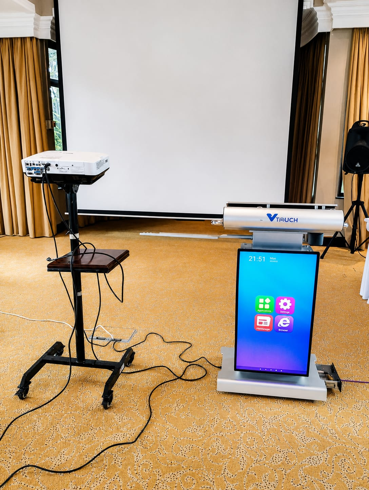
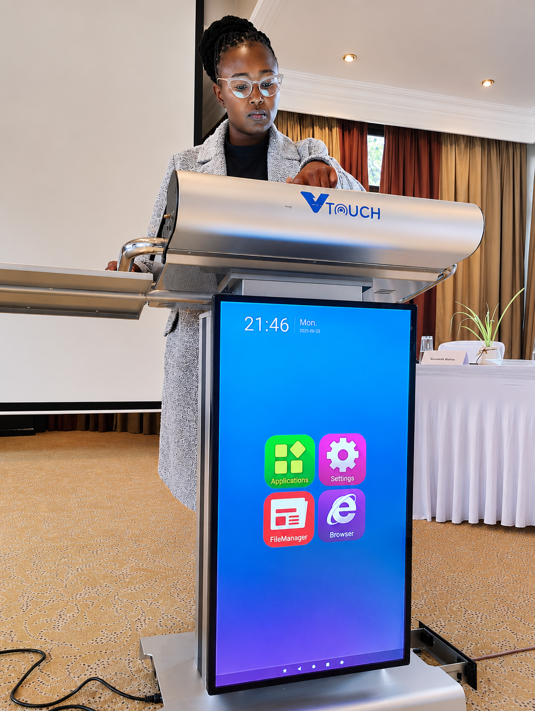

Project Overview
Designed custom audio-visual solutions tailored to client requirements, treating every room as its own problem. Good AV is invisible when it works: the right display for the sightlines, the right audio for the acoustics, and controls simple enough that anyone in the room can run a session without an engineer present.
Each design began with how the space would actually be used — boardroom, classroom, or event hall — and worked backwards from the experience the user needed, not from a fixed equipment list.
Key Responsibilities
- Assessed client needs, room dimensions, and intended use cases.
- Evaluated room acoustics and sightlines to guide equipment choices.
- Selected and specified projection, display, and audio components.
- Designed interactive presentation and signal-flow layouts.
- Produced clear system designs and schematics for installation.
- Walked clients through designs and refined them against budget.
Key Focus: Designing AV around the room and the user first, so technology serves the experience instead of complicating it.
Tools & Technologies Used
Projectors & Displays
Interactive Presentation Systems
Audio Design
Signal-Flow Planning
System Schematics
Impact & Outcomes
- Fit-for-purpose AV designs matched to each room's acoustics and use.
- Clear, buildable designs that made installation smoother.
- Intuitive presentation setups that non-technical users could operate.
- Stronger client confidence through experience-led design.
Project Evidence

